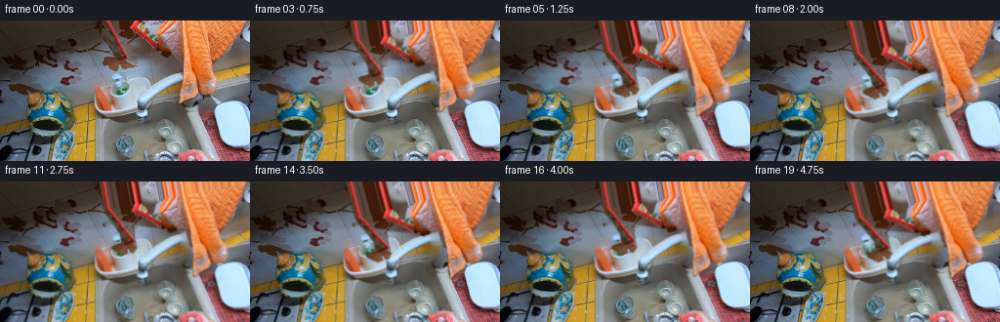
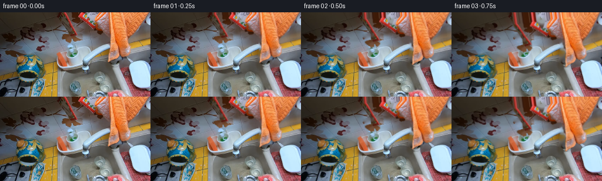

CODING AGENTS AS PIXEL WORLD MODELS
traex/GPT-6.1-Sol · common50_0027
点击播放 · 原生 RGB 像素
此结果可播放，但该运行尚未通过最终提交审核。页面展示不代表评测通过。
逐轮保存的候选
回放视频、检查图与代码变化。
每份候选均可单独播放。实际图片检查记录在下方工具轨迹中。
候选 01播放与检查图
点击播放 · 原生 RGB 像素


展开代码变化
--- 上一保存版本
+++ 本次保存版本
@@ -0,0 +1,137 @@
+from pathlib import Path
+import numpy as np
+from PIL import Image, ImageDraw, ImageFilter
+from scipy import ndimage as ndi
+import cv2
+import artifact_io
+
+ROOT=Path(__file__).resolve().parent
+W,H=256,144
+
+def poly_mask(points, w=W, h=H, off=(0,0), blur=.55):
+ m=Image.new('L',(w,h));d=ImageDraw.Draw(m)
+ d.polygon([(x+off[0],y+off[1]) for x,y in points],fill=255)
+ return np.array(m.filter(ImageFilter.GaussianBlur(blur)),dtype=np.float32)/255
+
+def sample(img,x,y):
+ return cv2.remap(img,x.astype(np.float32),y.astype(np.float32),cv2.INTER_LINEAR,borderMode=cv2.BORDER_REPLICATE)
+
+def generate():
+ source=np.array(Image.open(ROOT/'first_frame.png').convert('RGB'))
+ f=source.astype(np.float32)
+ yy,xx=np.mgrid[:H,:W].astype(np.float32)
+ r,g,b=f.transpose(2,0,1)
+ # A hand silhouette derived entirely from the warm pixels in the input.
+ skin=(r>1.22*g)&(g>1.08*b)&(r>128)&(g>64)&(xx>157)&(yy<86)
+ labs,n=ndi.label(skin)
+ sizes=np.bincount(labs.ravel());sizes[0]=0
+ skin=labs==sizes.argmax()
+ skin=ndi.binary_closing(skin,structure=np.ones((3,3)))
+ skin=ndi.binary_fill_holes(skin)
+ # Keep the off-screen wrist and the specular patches between the fingers.
+ skin[:2,169:]=True
+ palm=poly_mask([(183,-15),(260,-15),(258,7),(250,16),(243,26),(233,36),(223,45),(216,50),(207,60),(193,61),(185,54),(184,39)])>.5
+ skin |= palm
+ sponge_poly=[(102,-30),(137,-30),(144,0),(151,14),(160,23),(174,30),(174,35),(168,36),(157,29),(138,23),(132,21),(131,37),(131,45),(127,49),(116,50),(111,46),(107,42),(105,39),(117,36),(117,28),(112,16),(106,5)]
+ sponge=poly_mask(sponge_poly)>.5
+ # Connect the wet grip without including the static bowl beneath it.
+ grip=poly_mask([(161,0),(181,0),(183,28),(183,35),(168,34),(157,24),(154,15)])>.5
+ binary=skin|sponge|grip
+ # At the silhouette only subpixel antialiasing is used, so source texture survives.
+ alpha=ndi.gaussian_filter(binary.astype(np.float32),.55)
+ # Source-derived, deterministic reconstruction of the very small uncovered areas.
+ hole=ndi.binary_dilation(binary,iterations=2).astype(np.uint8)*255
+ background=cv2.inpaint(source,hole,6,cv2.INPAINT_TELEA).astype(np.float32)
+ # Extend the wrist and the sponge beyond the top crop for a natural wrist turn.
+ pad=80
+ extended=np.pad(f,((pad,pad),(pad,pad),(0,0)),mode='edge')
+ ea=np.pad(alpha,((pad,pad),(pad,pad)),mode='edge')
+ # The wrist continues beyond the right edge, while the sink does not.
+ ea[pad+10:,pad+W:]=0
+ # Glass and supporting fingers: a very slight synchronized roll rather than a cutout.
+ glass_weight=np.exp(-(((xx-133)/42)**4+((yy-77)/23)**4))
+ glass_weight*=1/(1+np.exp(np.clip((51-yy)/2,-40,40)))
+ rng=np.random.default_rng(27)
+ bx=rng.uniform(-9,10,42);by=rng.uniform(-4,13,42)
+ br=rng.uniform(.35,1.05,42);bop=rng.uniform(.10,.39,42)
+ frames=[source.copy()]
+ metrics=[]
+ for i in range(1,20):
+ t=i/4
+ reach=np.clip(t/1.3,0,1)
+ ease=reach*reach*(3-2*reach)
+ scr=np.clip((t-1.05)/.7,0,1)
+ phase=2*np.pi*(t-1.3)/1.25
+ stroke=np.sin(phase)*scr
+ # A short reach followed by three rounded reciprocating wiping strokes.
+ angle=-.215*ease + .044*stroke
+ dx=-2.0*ease+1.5*np.cos(phase)*scr
+ dy=1.0*ease+1.25*stroke
+ ca,sa=np.cos(angle),np.sin(angle)
+ pivot=np.array([251.,1.])
+ # Holder's small counter-rotation follows the pressure of the wiping hand.
+ ga=.025*stroke
+ cg,sg=np.cos(ga),np.sin(ga)
+ gx=113+cg*(xx-113)+sg*(yy-91)-.7*stroke
+ gy=91-sg*(xx-113)+cg*(yy-91)+.5*np.cos(phase)*scr
+ gx=xx+(gx-xx)*glass_weight
+ gy=yy+(gy-yy)*glass_weight
+ base=sample(background,gx,gy)
+ # Rigid local hand movement preserves actual fingers, sponge pores and skin folds.
+ qx=xx-pivot[0]-dx; qy=yy-pivot[1]-dy
+ sx=ca*qx+sa*qy+pivot[0]
+ sy=-sa*qx+ca*qy+pivot[1]
+ color=sample(extended,sx+pad,sy+pad)
+ mask=sample(ea,sx+pad,sy+pad)
+ # Matching contact shadow on the fixed, transparent vessel.
+ shadow=ndi.gaussian_filter(mask,1.5)-mask
+ base*=1-.14*np.maximum(shadow,0)[...,None]*ease
+ frame=base*(1-mask[...,None])+color*mask[...,None]
+ # A small amount of wet foam accumulates at the sponge's lower contact edge.
+ cx=pivot[0]+ca*(128-pivot[0])-sa*(43-pivot[1])+dx
+ cy=pivot[1]+sa*(128-pivot[0])+ca*(43-pivot[1])+dy
+ wet=np.clip((t-.95)/1.8,0,1)
+ foam=np.zeros((H,W),np.float32)
+ # These highlights are translucent, varied, and smaller than the fingers.
+ for k in range(42):
+ count=10+int(wet*27)
+ if k>=count:continue
+ px=cx+bx[k]+.25*np.sin(phase+k)
+ py=cy+by[k]
+ rr=br[k]
+ dist=((xx-px)/rr)**2+((yy-py)/rr)**2
+ bubble=np.exp(-dist*1.7)*bop[k]*wet
+ # A few microfoam flecks remain on the exposed glass after each pass.
+ bubble*=np.clip(1-mask*.68,0,1)
+ foam=np.maximum(foam,bubble)
+ frame=frame*(1-foam[...,None])+np.array([223,234,235])*foam[...,None]
+ # Sparse droplets descend into the basin rather than a synthetic water column.
+ if wet>0:
+ for k in range(4):
+ age=(t*.7+k*.251)%1
+ px=cx+4+k*3+np.sin(t*2+k)
+ py=cy+10+age*27
+ droplet=np.exp(-((xx-px)/.45)**2-((yy-py)/(.9+age*.3))**2)*.14*wet*(1-age)
+ droplet*=1-mask
+ frame=frame*(1-droplet[...,None])+np.array([188,211,221])*droplet[...,None]
+ # Subpixel egocentric movement; no scene changes or invented surroundings.
+ zoom=1+.0045*ease
+ camx=.32*np.sin(t*2.3)*ease
+ camy=.23*np.sin(t*1.8)*ease
+ frame=sample(frame,(xx-128)/zoom+128+camx,(yy-72)/zoom+72+camy)
+ frame=np.clip(np.rint(frame),0,255).astype(np.uint8)
+ frames.append(frame)
+ metrics.append({'frame':i,'hand_angle_degrees':float(angle*180/np.pi),'contact':[float(cx),float(cy)]})
+ frames=np.stack(frames)
+ assert frames.shape==(20,144,256,3)
+ assert frames.dtype==np.uint8 and np.array_equal(frames[0],source)
+ np.save(ROOT/'candidate_frames.npy',frames)
+ # Numeric diagnostics, also saved locally for reproducibility and inspection.
+ import json
+ (ROOT/'motion_diagnostics.json').write_text(json.dumps(metrics,indent=2))
+ artifact_io.save(frames,ROOT)
+ print('Saved',frames.shape,frames.dtype)
+ print('Mean adjacent pixel changes:',np.round(np.abs(np.diff(frames.astype(float),axis=0)).mean((1,2,3)),2).tolist())
+
+if __name__=='__main__':
+ generate()
候选 02播放与检查图
点击播放 · 原生 RGB 像素
展开代码变化
--- 上一保存版本
+++ 本次保存版本
@@ -61,11 +61,11 @@
reach=np.clip(t/1.3,0,1)
ease=reach*reach*(3-2*reach)
scr=np.clip((t-1.05)/.7,0,1)
- phase=2*np.pi*(t-1.3)/1.25
+ phase=2*np.pi*((t-1.3)/1.25+.012*(t-1.3)**2)
stroke=np.sin(phase)*scr
# A short reach followed by three rounded reciprocating wiping strokes.
- angle=-.215*ease + .044*stroke
- dx=-2.0*ease+1.5*np.cos(phase)*scr
+ angle=-.215*ease + (.043+.003*np.sin(t*.83))*stroke
+ dx=-2.0*ease+1.5*np.cos(phase)*scr-.28*scr*(t-1.3)
dy=1.0*ease+1.25*stroke
ca,sa=np.cos(angle),np.sin(angle)
pivot=np.array([251.,1.])
@@ -81,6 +81,12 @@
qx=xx-pivot[0]-dx; qy=yy-pivot[1]-dy
sx=ca*qx+sa*qy+pivot[0]
sy=-sa*qx+ca*qy+pivot[1]
+ # Compliant contact: a tiny compression of the source sponge tip,
+ # smoothly falling to zero before reaching the fingers.
+ tip=np.exp(-((sx-126)/11)**2-((sy-41)/9)**2)
+ pressure=(.35+.45*(1+np.cos(phase))*.5)*scr
+ sy=sy+tip*pressure
+ sx=sx+tip*.4*stroke
color=sample(extended,sx+pad,sy+pad)
mask=sample(ea,sx+pad,sy+pad)
# Matching contact shadow on the fixed, transparent vessel.
候选 03播放与检查图
可观测工具轨迹
实际执行的命令与返回图片。
命令 1exit 0
/bin/bash -lc "ls -la && cat prompt.txt && printf '\\n---RULES---\\n' && cat GENERATION_RULES.md"
命令 2exit 0
/bin/bash -lc "cat task_spec.json && cat artifact_io.py && python - <<'PY'
from PIL import Image
import numpy as np
im=np.array(Image.open('first_frame.png').convert('RGB'))
print('shape',im.shape)
# coarse color grid, grouped by nearest named colors
palette={' ': (220,220,220),'.':(165,165,165),'s':(110,110,110),'#':(50,50,50),'K':(12,12,12),'r':(160,45,35),'R':(240,50,40),'p':(220,150,130),'P':(180,115,90),'b':(70,95,135),'B':(40,50,90),'y':(205,180,100)}
a=np.array(list(palette.values())); ch=list(palette)
img=Image.fromarray(im).resize((85,48))
for row in np.array(img):
print(''.join(ch[((a-x)**2).sum(1).argmin()] for x in row))
print('pixel samples grid each 16:')
for y in range(0,144,8):
print(y, ['%02x%02x%02x'%tuple(x) for x in im[y,::16]])
PY"命令 3exit 0
/bin/bash -lc "python - <<'PY'
import numpy as np
from PIL import Image
im=np.array(Image.open('first_frame.png').convert('RGB')).astype(float)
rng=np.random.default_rng(1); flat=im.reshape(-1,3);c=flat[rng.choice(len(flat),20,replace=False)]
for _ in range(40):
l=((flat[:,None]-c[None])**2).sum(2).argmin(1)
c=np.array([flat[l==i].mean(0) if (l==i).any() else c[i] for i in range(len(c))])
order=np.argsort(c.mean(1));c=c[order];l=((flat[:,None]-c[None])**2).sum(2).argmin(1).reshape(144,256)
chars='0123456789ABCDEFGHIJ'
for i,rgb in enumerate(c):
ys,xs=np.where(l==i);print(chars[i],rgb.round(1),len(xs),'bbox', xs.min(),ys.min(),xs.max(),ys.max())
for y in range(0,144,2):
print(f'{y:03d} '+''.join(chars[n] for n in l[y,::2]))
PY"命令 4exit 0
/bin/bash -lc "python - <<'PY'
import numpy as np
from PIL import Image
from scipy.ndimage import label
im=np.array(Image.open('first_frame.png')).astype(float);r,g,b=im.transpose(2,0,1)
for name,m in [('red',(r>g*1.4)&(r>b*1.3)&(r>60)&(g<90)),('skin',(r>g*1.25)&(g>b*1.12)&(r>125)&(g>65)),('light',(b>r)&(r>155))]:
l,n=label(m)
print(name)
for i in np.argsort(np.bincount(l.ravel())[1:])[-15:][::-1]+1:
yy,xx=np.where(l==i);print(len(xx),xx.min(),yy.min(),xx.max(),yy.max(), 'cent',xx.mean().round(1),yy.mean().round(1))
for reg in [(95,0,183,52),(166,0,255,87),(80,60,168,105),(185,126,255,144)]:
x0,y0,x1,y1=reg;print('\\nREGION',reg)
crop=im[y0:y1,x0:x1];
for y,row in enumerate(crop[::2]):
s=''
for rr,gg,bb in row:
if rr>gg*1.6 and rr>bb*1.5 and gg<90: ch='R'
elif rr>gg*1.3 and gg>bb*1.15 and rr>125: ch='h'
elif rr>gg*1.22 and rr>100: ch='p'
elif bb>rr*1.1 and bb>gg*1.05: ch='b'
else: ch=' .:-=+*#%@'[min(9,int((rr+gg+bb)/3/256*10))]
s+=ch
print(f'{y0+y*2:03d} '+s)
PY"命令 5exit 0
/bin/bash -lc "python - <<'PY'
from PIL import Image, ImageFilter
import numpy as np
im=np.array(Image.open('first_frame.png')).astype(float)
# output small 2d RGB regions in text color codes by hue categories
for box in [(96,0,180,54),(65,66,125,144),(165,0,235,90)]:
x0,y0,x1,y1=box;print('REGION',box)
for y in range(y0,y1,2):
row=[]
for x in range(x0,x1,2):
r,g,b=im[y:y+2,x:x+2].mean((0,1));
if r>g*1.5 and r>b*1.35:
c='R' if r>100 else 'r'
elif r>g*1.25 and g>b*1.3:
c='S' if g>95 else 's'
elif r>g*1.1 and g>b*1.7: c='Y'
elif r>g*1.12 and r>b*1.2: c='o'
elif r>b*1.25: c='t'
elif b>r*1.2: c='B' if b>160 else 'b'
else:c=' .:-=+*#%@'[min(9,int((r+g+b)/3/256*10))]
row.append(c)
print(f'{y:3d} '+''.join(row))
print('\\nSamples red segment')
for y in [0,8,16,24,32,40,48]:
print('Y',y, ' '.join(f'{x}:{tuple(im[y,x].astype(int))}' for x in range(100,180,4)))
PY"命令 6exit 0
/bin/bash -lc "python - <<'PY'
import numpy as np
from PIL import Image
im=np.array(Image.open('first_frame.png')).astype(float)
for y in range(40,102,2):
row=im[y]; r,g,b=row.T;m=(b>r*1.06)&(r>155)&(np.arange(256)>80)&(np.arange(256)<195)
# intervals
q=np.where(m)[0]; groups=np.split(q,np.where(np.diff(q)>1)[0]+1)
print(y,[(int(z[0]),int(z[-1])) for z in groups if len(z)>0])
print('detailed rgb sponge-ish')
for y in range(68,94,2):
print(y, ' '.join(f'{x}:{tuple(im[y,x].astype(int))}' for x in range(96,124,2)))
PY"命令 7exit 0
/bin/bash -lc "python - <<'PY'
from PIL import Image,ImageFilter
import numpy as np
im=np.array(Image.open('first_frame.png').filter(ImageFilter.GaussianBlur(1.3))).astype(float)
chars=' .,:;irsXA253hMHGS#9B&@'
# luminance 112x63
sm=np.array(Image.fromarray(im.astype('uint8')).resize((112,63))).mean(2)
for row in sm:
print(''.join(chars[min(len(chars)-1,int(v/256*len(chars)))] for v in row))
PY"命令 8exit 0
/bin/bash -lc "python - <<'PY'
import numpy as np
from PIL import Image
im=np.array(Image.open('first_frame.png')).astype(float);r,g,b=im.transpose(2,0,1)
for y in range(0,53,2):
m=((r>g*1.5)&(r>b*1.4)&(r>55)&(g<90))[y,90:184]; xs=np.where(m)[0]+90
q=np.split(xs,np.where(np.diff(xs)>1)[0]+1)
print(y,[(int(z[0]),int(z[-1])) for z in q if len(z)>0])
PY"命令 9exit 0
/bin/bash -lc "python - <<'PY' import importlib.util for x in ['cv2','scipy','numpy','PIL']:print(x,bool(importlib.util.find_spec(x))) PY"
命令 10exit 0
/bin/bash -lc "cat > generate.py <<'PY'
from pathlib import Path
import numpy as np
from PIL import Image, ImageDraw, ImageFilter
from scipy import ndimage as ndi
import cv2
import artifact_io
ROOT=Path(__file__).resolve().parent
W,H=256,144
def poly_mask(points, w=W, h=H, off=(0,0), blur=.55):
m=Image.new('L',(w,h));d=ImageDraw.Draw(m)
d.polygon([(x+off[0],y+off[1]) for x,y in points],fill=255)
return np.array(m.filter(ImageFilter.GaussianBlur(blur)),dtype=np.float32)/255
def sample(img,x,y):
return cv2.remap(img,x.astype(np.float32),y.astype(np.float32),cv2.INTER_LINEAR,borderMode=cv2.BORDER_REPLICATE)
def generate():
source=np.array(Image.open(ROOT/'first_frame.png').convert('RGB'))
f=source.astype(np.float32)
yy,xx=np.mgrid[:H,:W].astype(np.float32)
r,g,b=f.transpose(2,0,1)
# A hand silhouette derived entirely from the warm pixels in the input.
skin=(r>1.22*g)&(g>1.08*b)&(r>128)&(g>64)&(xx>157)&(yy<86)
labs,n=ndi.label(skin)
sizes=np.bincount(labs.ravel());sizes[0]=0
skin=labs==sizes.argmax()
skin=ndi.binary_closing(skin,structure=np.ones((3,3)))
skin=ndi.binary_fill_holes(skin)
# Keep the off-screen wrist and the specular patches between the fingers.
skin[:2,169:]=True
palm=poly_mask([(183,-15),(260,-15),(258,7),(250,16),(243,26),(233,36),(223,45),(216,50),(207,60),(193,61),(185,54),(184,39)])>.5
skin |= palm
sponge_poly=[(102,-30),(137,-30),(144,0),(151,14),(160,23),(174,30),(174,35),(168,36),(157,29),(138,23),(132,21),(131,37),(131,45),(127,49),(116,50),(111,46),(107,42),(105,39),(117,36),(117,28),(112,16),(106,5)]
sponge=poly_mask(sponge_poly)>.5
# Connect the wet grip without including the static bowl beneath it.
grip=poly_mask([(161,0),(181,0),(183,28),(183,35),(168,34),(157,24),(154,15)])>.5
binary=skin|sponge|grip
# At the silhouette only subpixel antialiasing is used, so source texture survives.
alpha=ndi.gaussian_filter(binary.astype(np.float32),.55)
# Source-derived, deterministic reconstruction of the very small uncovered areas.
hole=ndi.binary_dilation(binary,iterations=2).astype(np.uint8)*255
background=cv2.inpaint(source,hole,6,cv2.INPAINT_TELEA).astype(np.float32)
# Extend the wrist and the sponge beyond the top crop for a natural wrist turn.
pad=80
extended=np.pad(f,((pad,pad),(pad,pad),(0,0)),mode='edge')
ea=np.pad(alpha,((pad,pad),(pad,pad)),mode='edge')
# The wrist continues beyond the right edge, while the sink does not.
ea[pad+10:,pad+W:]=0
# Glass and supporting fingers: a very slight synchronized roll rather than a cutout.
glass_weight=np.exp(-(((xx-133)/42)**4+((yy-77)/23)**4))
glass_weight*=1/(1+np.exp(np.clip((51-yy)/2,-40,40)))
rng=np.random.default_rng(27)
bx=rng.uniform(-9,10,42);by=rng.uniform(-4,13,42)
br=rng.uniform(.35,1.05,42);bop=rng.uniform(.10,.39,42)
frames=[source.copy()]
metrics=[]
for i in range(1,20):
t=i/4
reach=np.clip(t/1.3,0,1)
ease=reach*reach*(3-2*reach)
scr=np.clip((t-1.05)/.7,0,1)
phase=2*np.pi*(t-1.3)/1.25
stroke=np.sin(phase)*scr
# A short reach followed by three rounded reciprocating wiping strokes.
angle=-.215*ease + .044*stroke
dx=-2.0*ease+1.5*np.cos(phase)*scr
dy=1.0*ease+1.25*stroke
ca,sa=np.cos(angle),np.sin(angle)
pivot=np.array([251.,1.])
# Holder's small counter-rotation follows the pressure of the wiping hand.
ga=.025*stroke
cg,sg=np.cos(ga),np.sin(ga)
gx=113+cg*(xx-113)+sg*(yy-91)-.7*stroke
gy=91-sg*(xx-113)+cg*(yy-91)+.5*np.cos(phase)*scr
gx=xx+(gx-xx)*glass_weight
gy=yy+(gy-yy)*glass_weight
base=sample(background,gx,gy)
# Rigid local hand movement preserves actual fingers, sponge pores and skin folds.
qx=xx-pivot[0]-dx; qy=yy-pivot[1]-dy
sx=ca*qx+sa*qy+pivot[0]
sy=-sa*qx+ca*qy+pivot[1]
color=sample(extended,sx+pad,sy+pad)
mask=sample(ea,sx+pad,sy+pad)
# Matching contact shadow on the fixed, transparent vessel.
shadow=ndi.gaussian_filter(mask,1.5)-mask
base*=1-.14*np.maximum(shadow,0)[...,None]*ease
frame=base*(1-mask[...,None])+color*mask[...,None]
# A small amount of wet foam accumulates at the sponge's lower contact edge.
cx=pivot[0]+ca*(128-pivot[0])-sa*(43-pivot[1])+dx
cy=pivot[1]+sa*(128-pivot[0])+ca*(43-pivot[1])+dy
wet=np.clip((t-.95)/1.8,0,1)
foam=np.zeros((H,W),np.float32)
# These highlights are translucent, varied, and smaller than the fingers.
for k in range(42):
count=10+int(wet*27)
if k>=count:continue
px=cx+bx[k]+.25*np.sin(phase+k)
py=cy+by[k]
rr=br[k]
dist=((xx-px)/rr)**2+((yy-py)/rr)**2
bubble=np.exp(-dist*1.7)*bop[k]*wet
# A few microfoam flecks remain on the exposed glass after each pass.
bubble*=np.clip(1-mask*.68,0,1)
foam=np.maximum(foam,bubble)
frame=frame*(1-foam[...,None])+np.array([223,234,235])*foam[...,None]
# Sparse droplets descend into the basin rather than a synthetic water column.
if wet>0:
for k in range(4):
age=(t*.7+k*.251)%1
px=cx+4+k*3+np.sin(t*2+k)
py=cy+10+age*27
droplet=np.exp(-((xx-px)/.45)**2-((yy-py)/(.9+age*.3))**2)*.14*wet*(1-age)
droplet*=1-mask
frame=frame*(1-droplet[...,None])+np.array([188,211,221])*droplet[...,None]
# Subpixel egocentric movement; no scene changes or invented surroundings.
zoom=1+.0045*ease
camx=.32*np.sin(t*2.3)*ease
camy=.23*np.sin(t*1.8)*ease
frame=sample(frame,(xx-128)/zoom+128+camx,(yy-72)/zoom+72+camy)
frame=np.clip(np.rint(frame),0,255).astype(np.uint8)
frames.append(frame)
metrics.append({'frame':i,'hand_angle_degrees':float(angle*180/np.pi),'contact':[float(cx),float(cy)]})
frames=np.stack(frames)
assert frames.shape==(20,144,256,3)
assert frames.dtype==np.uint8 and np.array_equal(frames[0],source)
np.save(ROOT/'candidate_frames.npy',frames)
# Numeric diagnostics, also saved locally for reproducibility and inspection.
import json
(ROOT/'motion_diagnostics.json').write_text(json.dumps(metrics,indent=2))
artifact_io.save(frames,ROOT)
print('Saved',frames.shape,frames.dtype)
print('Mean adjacent pixel changes:',np.round(np.abs(np.diff(frames.astype(float),axis=0)).mean((1,2,3)),2).tolist())
if __name__=='__main__':
generate()
PY
python generate.py"命令 11exit 0
/bin/bash -lc "cat motion_diagnostics.json && python - <<'PY'
import numpy as np
from PIL import Image
f=np.load('candidate_frames.npy')
for i in [0,5,9,14,19]:
print('\\nFRAME',i)
a=np.array(Image.fromarray(f[i]).resize((85,48))).astype(float)
for y,row in enumerate(a):
s=''
for r,g,b in row:
if r>g*1.35 and r>b*1.3 and r>85:
c='h' if g>82 else 'R'
elif r>g*1.15 and g>b*1.65 and r>90:c='y'
elif b>r*1.1 and b>g*1.05:c='B' if b>170 else 'b'
else:c=' .:-=+*#%@'[min(9,int((r+g+b)/3/256*10))]
s+=c
print(s)
print('first exact',np.array_equal(f[0],np.array(Image.open('first_frame.png').convert('RGB'))))
print('global per frame min max',f.min(),f.max())
PY"命令 12exit 0
/bin/bash -lc "python - <<'PY'
import numpy as np
from PIL import Image
import cv2
from scipy import ndimage as ndi
from generate import poly_mask,sample
f=np.array(Image.open('first_frame.png')).astype('float32');r,g,b=f.transpose(2,0,1);yy,xx=np.mgrid[:144,:256].astype('float32')
skin=(r>1.22*g)&(g>1.08*b)&(r>128)&(g>64)&(xx>157)&(yy<86)
l,_=ndi.label(skin);s=np.bincount(l.ravel());s[0]=0;skin=l==s.argmax();skin=ndi.binary_fill_holes(ndi.binary_closing(skin,structure=np.ones((3,3))));skin[:2,169:]=True
skin|=poly_mask([(183,-15),(260,-15),(258,7),(250,16),(243,26),(233,36),(223,45),(216,50),(207,60),(193,61),(185,54),(184,39)])>.5
sp=poly_mask([(102,-30),(137,-30),(144,0),(151,14),(160,23),(174,30),(174,35),(168,36),(157,29),(138,23),(132,21),(131,37),(131,45),(127,49),(116,50),(111,46),(107,42),(105,39),(117,36),(117,28),(112,16),(106,5)])>.5
grip=poly_mask([(161,0),(181,0),(183,28),(183,35),(168,34),(157,24),(154,15)])>.5
binary=skin|sp|grip
bg=cv2.inpaint(f.astype('uint8'),ndi.binary_dilation(binary,iterations=2).astype('uint8')*255,6,cv2.INPAINT_TELEA)
r2,g2,b2=bg.astype(float).transpose(2,0,1)
print('background red residual per row')
for y in range(0,56,4):
m=(r2[y]>g2[y]*1.7)&(r2[y]>b2[y]*1.6)&(r2[y]>90)&(np.arange(256)>90)&(np.arange(256)<180)
print(y,np.where(m)[0].tolist())
print('skin bbox',np.where(skin)[1].min(),np.where(skin)[1].max(),np.where(skin)[0].max(), 'mask pixels',binary.sum())
PY"命令 13exit 0
/bin/bash -lc "python generate.py && python - <<'PY'
import numpy as np
from PIL import Image
from pathlib import Path
p=np.load('pixels.npz')['pixels']
f=np.array(Image.open('first_frame.png').convert('RGB'),dtype=np.uint32)
packed=(f[:,:,0]<<16)|(f[:,:,1]<<8)|f[:,:,2]
assert p.shape==(144,256,20)
assert np.array_equal(p[:,:,0],packed)
assert len(list(Path('frames').glob('*.png')))==20
print('Validated: 20 RGB frames at 256Ã144; frame 00 pixel-identical.')
print('Artifacts:',[(x.name,x.stat().st_size) for x in map(Path,['pixels.npz','index.html','inspection.png','generate.py'])])
PY"保存候选 3 份；完成命令 13 次；可验证图片返回 0 张。原始 API 响应与完整日志保留在本地。